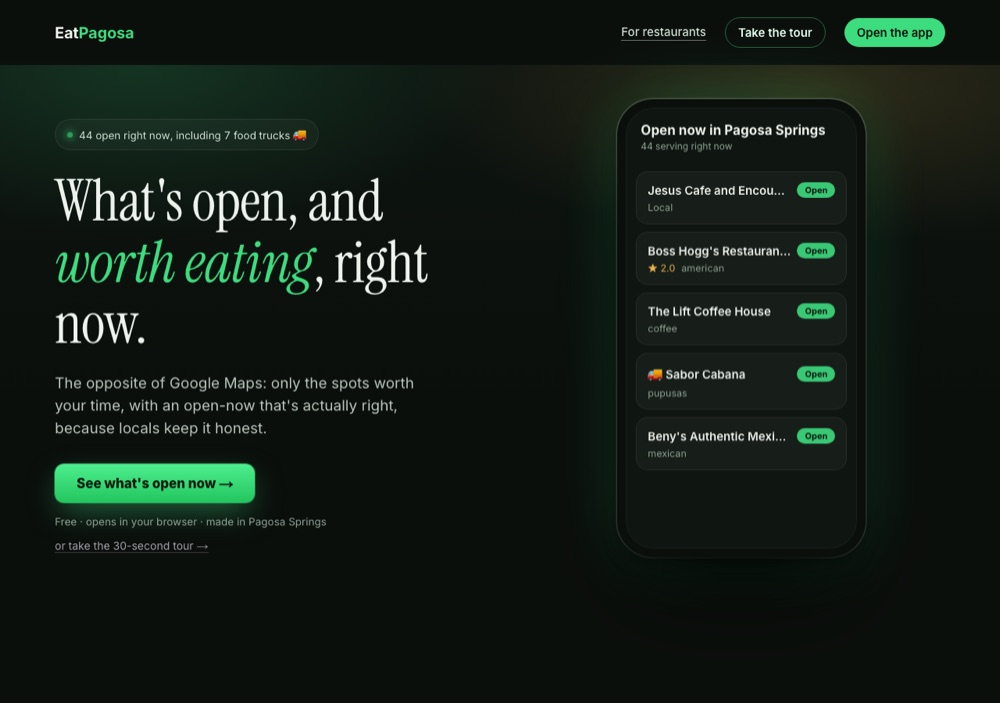
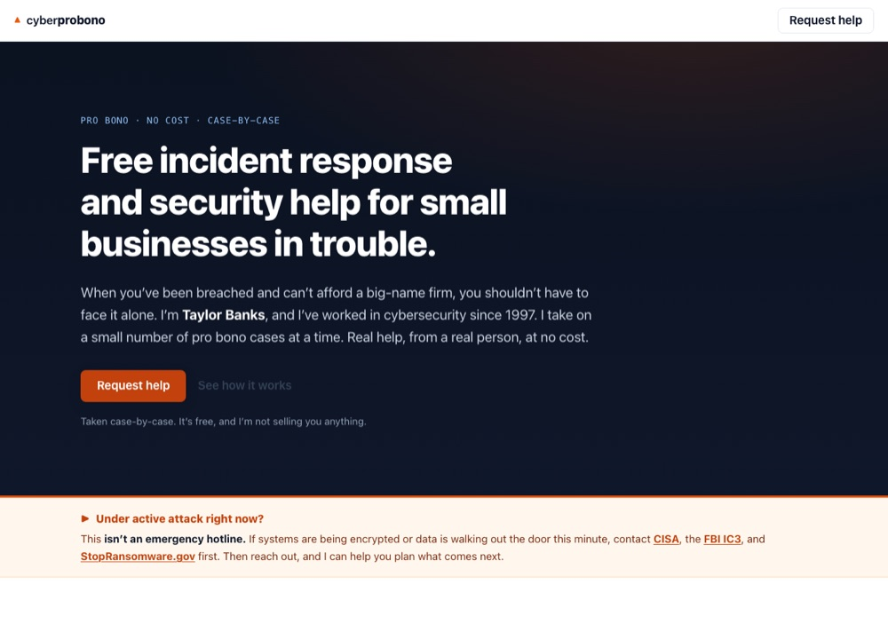
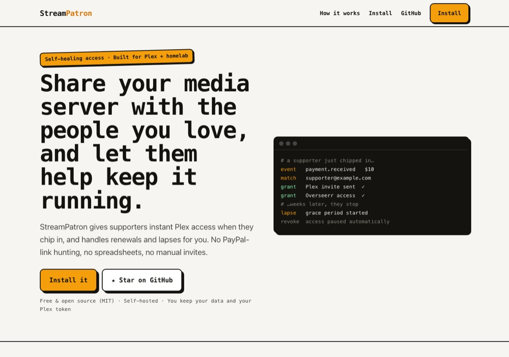

A whole marketing team on every page you ship.
One command runs the best marketing and design skills in order, gates the result, and hands back a page in your voice that does not read or look AI-made. Keep the static HTML, or take the design package to any tool.
npx skills add taylorbanks/page-foundry
This page was built by page-foundry. That is the demo.
Three real pages. They look nothing alike.



Every page an agent writes comes out a little different.
Ask an agent for a landing page and you get one. Ask again next week and you get another, in a different voice, with a different structure, conversion left to guesswork, wearing the same look every other AI is shipping right now. Some of those pages quietly talk a qualified buyer out of buying.
You end up where a founder I know landed: "I'm tired of every page looking like the same ai-generated bullshit."
One command runs the skills a good page needs, in order.
page-foundry does not reinvent marketing. It runs the best skills that already exist, hands each one the last one's output, then puts the page through eight gates before it ships.
When a skill you need is not installed, it uses a weaker built-in version and tells you the run was partial. It does not pretend. That is the part you do not get from prompting an agent yourself: a different voice every run, and nothing checking whether the page looks AI-made or lost you a buyer. The gates are what make it repeatable.
Eight gates. A page that fails one does not ship.
- 01Conversion. Scored against the MECLABS sequence.
- 02Voice. Scanned for AI words and AI sentence patterns both, against a rules file you edit.
- 03Accessibility. WCAG 2.2 AA.
- 04Performance. A weight budget, not a promise.
- 05AI discovery. So ChatGPT and Claude can cite the page.
- 06Measurement. A conversion you can actually track.
- 07Render review. Looked at, at real screen widths.
- 08Integrity. No invented testimonial, number, command, or screenshot of something that did not happen.
| Conversion audit | MECLABS C = 28 |
| Voice + pattern scan | 0 FAIL |
| Accessibility | WCAG 2.2 AA |
| Performance | 306 KB · 0 web fonts |
| AI discovery | schema · llms.txt · robots |
| Measurement | GitHub · skills.sh |
| Render review | 390 / 1440 |
| Integrity | 0 invented |
You own the page. Or hand it off.
Build mode
Static HTML you host anywhere. It does not need a platform or an account. The page is a file, and the file is yours.
Handoff mode
page-foundry writes the copy and a full design package, then hands it to Claude Design, Open Design, Codex, Gemini, or whatever you build with. You are not tied to a platform, or to page-foundry.
Read the source before you trust it.
page-foundry ships one program: a standard-library Python scanner, no network, no subprocess, no dependencies. Read it; it is short. The companion skills install from pinned sources, only when you approve. page-foundry is built by a security practitioner who assumes you will not take any of that on faith.
It is new. Few people have installed it yet. The proof is the real pages above, not a download count.
One command.
npx skills add taylorbanks/page-foundry
Also a Claude Code plugin, or a .skill upload on claude.ai. Star the repo if it earns it.
page-foundry runs on other people's work: marketingskills by Corey Haines, Anthropic's design skills, Vercel's web-design-guidelines, the humanizer pattern set, gstack, Remotion, and the MECLABS conversion sequence. Install them. The page is better with them, and it says so when they are missing.